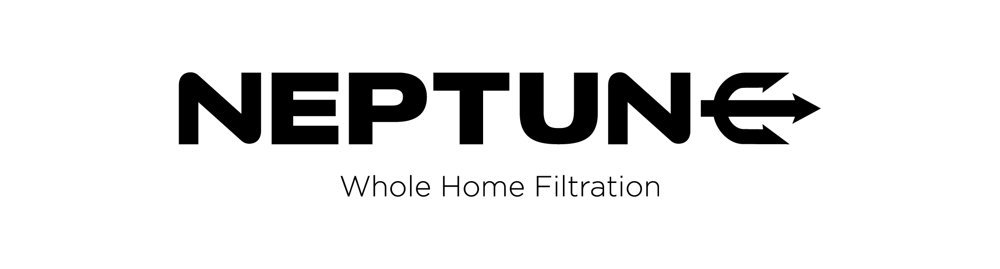

Every tap. Every shower. Completely filtered.
Filtered water for every part of everyday living.
WaterMark Certified
AS 3497
VIC Licensed Plumbers
Licensed & Insured
7-Year Warranty
Workmanship Guarantee

Neptune Whole Home Filtration · Melbourne
Every tap.
Every shower.
Completely filtered.
A Neptune whole home filtration system, installed at your mains, that removes chlorine, chloramines, VOCs, lead, mercury, and sediment — and inhibits limescale — from every tap in your home. Not a jug. Not an undersink filter. The entire house.
WaterMark Certified
VIC Licensed Plumbers
7-Year Warranty
Every tap, every day
Neptune · Front Cover